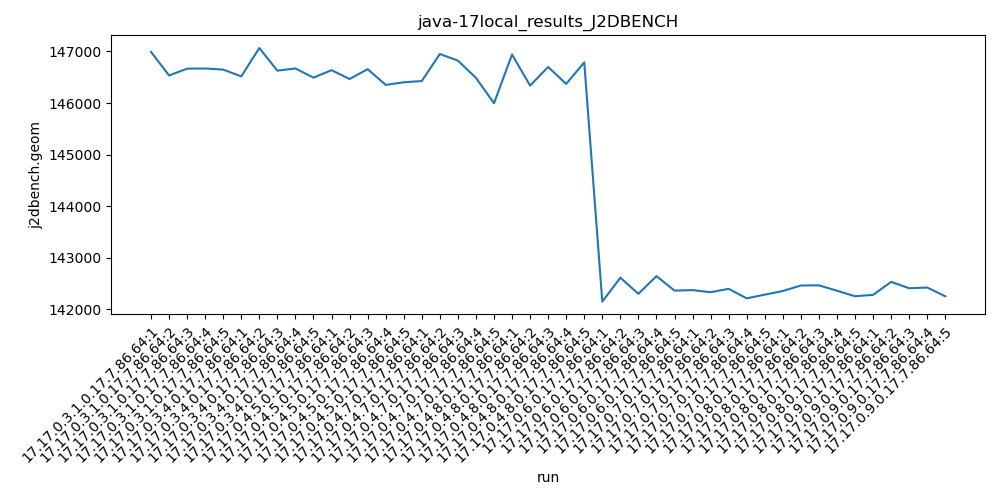
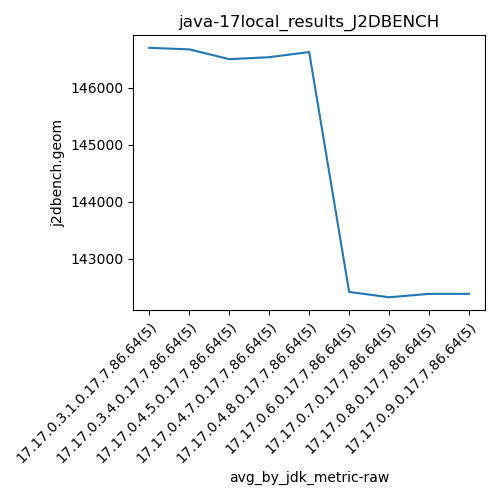
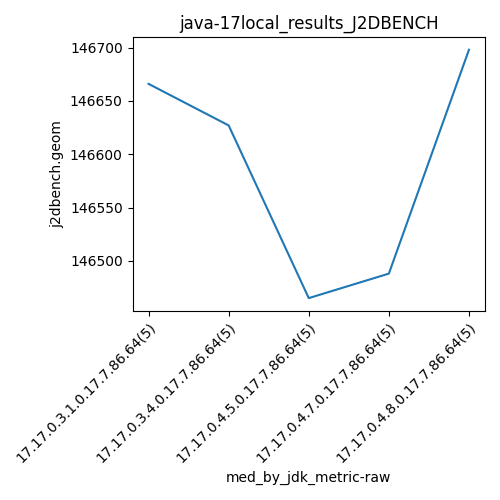
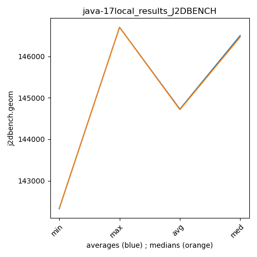

java-17 J2DBENCH
Context at bottom
/home/jvanek/git/benchmarks-in-nested-virtualisation-toolchain/final_results/local_results/local_results_JMH
java-17
J2DBENCH
/home/jvanek/git/benchmarks-in-nested-virtualisation-toolchain/final_results/local_results/local_results_J2DBENCH
java-17
J2DBENCH
local_results_J2DBENCH
final score
Expected number of java-17 JDKs: 5
1st avgmed_alljdks_metric:
/home/jvanek/git/benchmarks-in-nested-virtualisation-toolchain/final_results/result_processing.py /home/jvanek/git/benchmarks-in-nested-virtualisation-toolchain/final_results/local_results/local_results_J2DBENCH j2dbench.geom False
values: [146991, 146534, 146666, 146669, 146648, 146516, 147066, 146627, 146670, 146492, 146637, 146465, 146656, 146352, 146402, 146426, 146950, 146822, 146488, 145996, 146941, 146338, 146698, 146371, 146788]

Expected number of iterations: 5
final number of values: 25 out of 25
Pass rate: 100.0%
values: (145996, 147066, 146608.36, 146637)

** accuracy from all jdks and runs
more is better
MIN: 145996
MAX: 147066
AVG: 146608.36
MED: 146637
Relative differences 1:
MIN-MAX: 1.0 %
MIN-AVG: 0.0 %
MIN-MED: 0.0 %
MAX-MIN: -1.0 %
MAX-AVG: -0.0 %
MAX-MED: -0.0 %
AVG-MED: 0.0 %
stored to java-17.properties. sort | uniq that!
2nd avgmed_by_jdk_metric:
values: [146701.6, 146674.2, 146502.4, 146536.4, 146627.2]

values: [146666, 146627, 146465, 146488, 146698]

values: (146502.4, 146701.6, 146608.36000000002, 146627.2)
values: (146465, 146698, 146588.8, 146627)

** accuracy from all jdks where runs were avged
more is better
MIN: 146502.4
MAX: 146701.6
AVG: 146608.36000000002
MED: 146627.2
Relative differences 1:
MIN-MAX: 0.0 %
MIN-AVG: 0.0 %
MIN-MED: 0.0 %
MAX-MIN: -0.0 %
MAX-AVG: -0.0 %
MAX-MED: -0.0 %
AVG-MED: 0.0 %
stored to java-17.properties. sort | uniq that!
** accuracy from all jdks where runs were medianed
more is better
MIN: 146465
MAX: 146698
AVG: 146588.8
MED: 146627
Relative differences 1:
MIN-MAX: 0.0 %
MIN-AVG: 0.0 %
MIN-MED: 0.0 %
MAX-MIN: -0.0 %
MAX-AVG: -0.0 %
MAX-MED: -0.0 %
AVG-MED: 0.0 %
stored to java-17.properties. sort | uniq that!
/home/jvanek/git/benchmarks-in-nested-virtualisation-toolchain/final_results/local_results/local_results_RADARGUNs1
java-17
J2DBENCH
/home/jvanek/git/benchmarks-in-nested-virtualisation-toolchain/final_results/local_results/local_results_RADARGUNs3
java-17
J2DBENCH
/home/jvanek/git/benchmarks-in-nested-virtualisation-toolchain/final_results/local_results/local_results_SPECJBB
java-17
J2DBENCH
/home/jvanek/git/benchmarks-in-nested-virtualisation-toolchain/final_results/local_results/local_results_DACAPO
java-17
J2DBENCH
pass rates:
local_results_J2DBENCH=100.0%
Context:
- local_results
- J2DBENCH